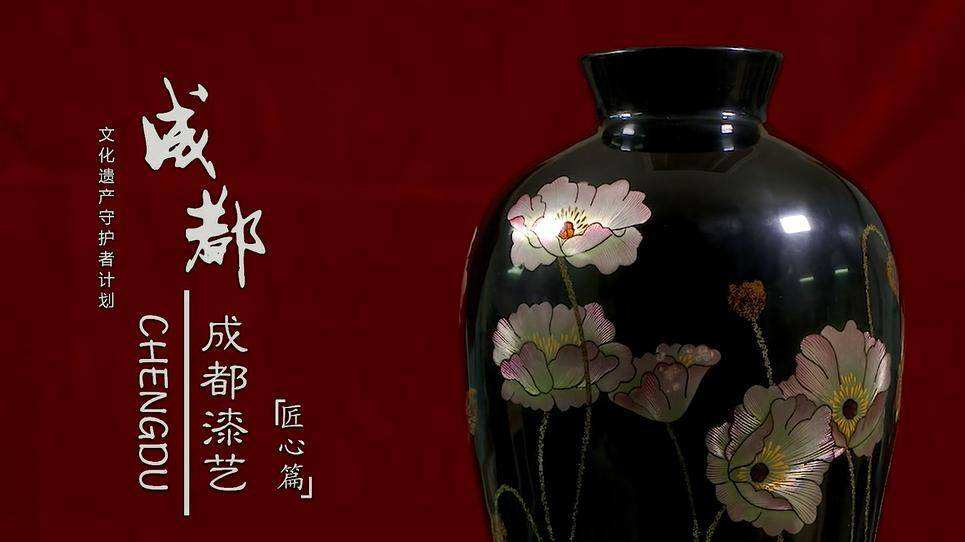
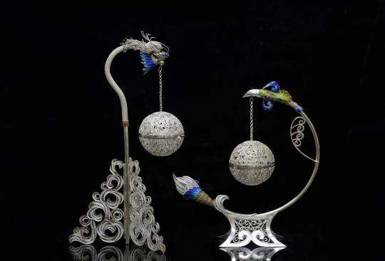
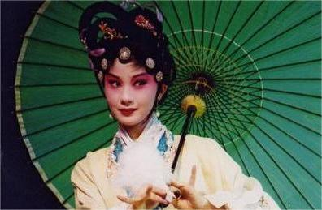
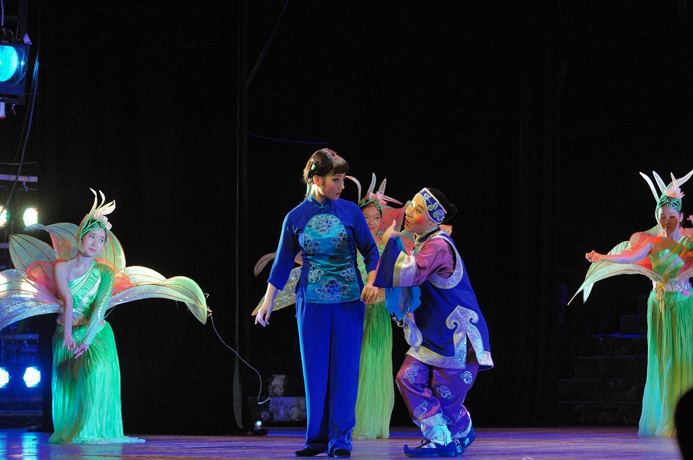

成都漆艺
成都漆艺起源于距今三千多年的商周时期，是中国最早的漆艺之一。成漆艺又称“卤漆”，以精美华丽、光泽细腻、图彩绚丽而著称。

银花丝
银花丝是成都最具特色的汉族传统金银工艺品，其以高纯度银为原材料，造型别致，玲珑剔透，具有浓郁的汉民族特色和独特的地方风
格。

川剧
川剧俗称川戏，主要流行于中国西南地区川渝云贵四省市的汉族地区，是融汇高腔、昆曲、胡琴(即皮黄)、弹戏(即梆子)和四川民间
灯戏五种声腔艺术而成的传统剧种。。

灯戏
灯戏不仅是重庆和四川地区极富地方特色的传统民间小戏，而且是川剧的重要声腔之一。灯戏源于四川川东北，由于其演出多与春节、
灯节、社火、庆坛等民俗活动结合在一起，所以形成小戏多、喜戏多、闹戏多的特点，一般场面大、情节复杂、人物众多的戏基本不演。
 传统工艺振兴计划
传统工艺振兴计划